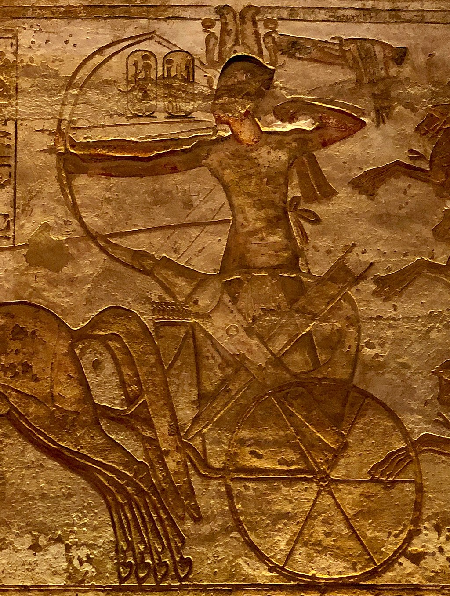

Antiguo Egipto
Ramsés II

Ramsés II, Usermaat Ra Setepen Ra - Ramsés Meriamón, conocido también como Ozymandias en las fuentes griegas, fue el tercer faraón de la Dinastía XIX de Egipto. Gobernó durante 66 años, desde 1279 a. C. hasta 1213 a. C. Es recordado como el faraón más celebrado y poderoso del Imperio Nuevo (c. 1550–1070 a. C.), considerado el período culminante del Antiguo Egipto. Sus sucesores y los egipcios posteriores lo llamaron «Gran ancestro». Fue el último gran faraón, ya que sus sucesores más importantes, Merenptah y Ramsés III, adoptaron políticas defensivas para mantener la soberanía en Canaán.
Cuando tenía trece años, Ramsés fue nombrado príncipe regente por su padre Seti I, y se cree que accedió al trono al final de su adolescencia. Durante la primera parte de su extenso reinado se enfocó en la construcción de ciudades, templos y monumentos. Fundó la ciudad de Pi-Ramsés en el delta del Nilo como su nueva capital, desde donde lanzó campañas militares hacia Siria.
También lideró expediciones militares en el Levante mediterráneo con el objetivo de reafirmar el poder egipcio sobre Canaán, y hacia el sur contra Nubia, campañas que quedaron conmemoradas en inscripciones en templos como Beit el-Wali y Gerf Hussein.
El historiador Manetón le atribuye un reinado de 66 años y dos meses, cifra que coincide con las estimaciones de los egiptólogos modernos. Se cree que vivió hasta los 90 o 91 años. Ramsés II celebró trece o catorce fiestas Heb Sed, una cantidad sin precedentes entre los faraones.
Fue enterrado en la tumba KV7 del Valle de los Reyes, cerca de Tebas, aunque su momia fue posteriormente trasladada a un escondrijo real, donde fue descubierta en 1881. Su cuerpo estuvo expuesto durante décadas en el Museo Egipcio de El Cairo, y desde 2022 se encuentra en el Museo Nacional de la Civilización Egipcia.
Ramsés acompañó a su padre en campañas militares para sofocar rebeliones en Canaán. También lo secundó en la guerra contra los hititas, que habían ocupado los territorios de Siria, tradicionalmente pertenecientes al Imperio Egipcio, pero perdidos hacía varios años debido a la debilidad del rey Akenatón. Ya como comandante, llevó a cabo una campaña contra Kush (Nubia), en el año 8 del reinado de Seti.
Se cuenta que Ramsés se encontraba en Kush cuando Seti murió. Volvió a Egipto donde, junto con su madre, Tuya, llevó a cabo las ceremonias fúnebres de su padre en la necrópolis tebana.
Durante los cinco primeros años de su reinado, Ramsés llevó a cabo cinco acciones militares importantes:
Batalla naval
Según la Estela de Tanis, se produjo en el Delta ante un ataque de piratas shardana. Ramsés los venció y reclutó a los prisioneros como soldados para su ejército. Estos shardana son mencionados en el Poema de Pentaur como miembros del ejército egipcio.
Expediciones a Asia
Poco después de comenzar su reinado en solitario, Ramsés tuvo que reaccionar ante la amenaza de los hititas. Quizás consideraban al nuevo rey más débil que su poderoso padre, y comenzaron a lanzar escaramuzas en las fronteras, invadiendo la tierra de Retenu. La primera expedición egipcia fue para pacificar Canaán, como paso previo a la conquista de Siria. Fue comandada por el propio Ramsés en el cuarto año de su reinado, y está documentada en dos estelas, una en Eleuteros y otra en Biblos. Esta acción se considera la precampaña de la famosa batalla de Qadesh.